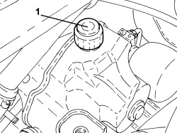
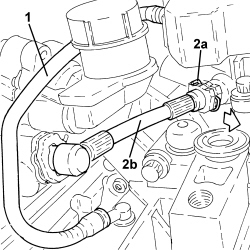
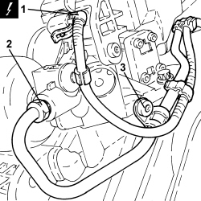
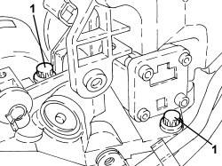
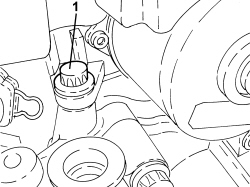
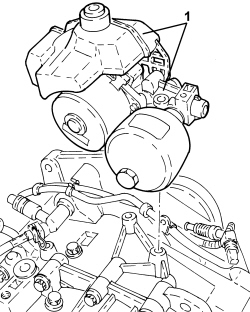
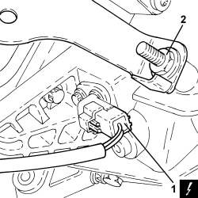
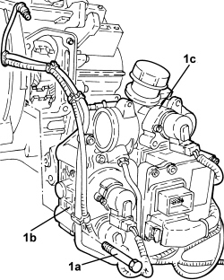
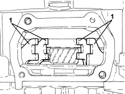
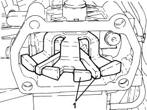

2127C35 HYDRAULIC UNIT/ELECTROHYDRAULIC SELECTION GEARBOX ELECTRIC PUMP ASSEMBLY - R.R. WITH GEARBOX REMOVED
- Path
- Procedures > 21 GEARBOX UNIT > 2127 ELECTRO-HYDRAULIC SELECTION GEARBOX EXTERNAL CONTROLS > 2127C HYDRAULIC GEAR SELECTION SYSTEM > 2127C35 HYDRAULIC UNIT/ELECTROHYDRAULIC SELECTION GEARBOX ELECTRIC PUMP ASSEMBLY - R.R. WITH GEARBOX REMOVED
- Kind
- repair procedure (removal / refitting; the operation number is the code)
- Applies to
- engines: 2.2 JTS; all production periods
- Interactive page
- https://sloeber94.github.io/elrnDB-aBrrSpdr/en/#/946004306
Applies to: engines: 2.2 JTS; all production periods
 Removing
Removing
 Refitting
Refitting1. Undo the cap and draw off the fluid from the hydraulic system reservoir using a suitable syringe.

Applies to: engines: 2.2 JTS; all production periods
1. Disconnect the oil return pipe between the valve assembly and the hydraulic system reservoir and remove it.
2. Retract the clip (2a) and disconnect the fluid pipe between the master cylinder and the three-way connector (2b), three-way connector side.

Applies to: engines: 2.2 JTS; all production periods
1. Disconnect the electrical connection for the electric pump.
Description | Connector | |
|---|---|---|
1 | Robotized gearbox electric pump |
2. Undo the connector for the rigid fluid pipe between the pump and the valve assembly, pump side.
3. Undo the bolt for the bracket securing the pipe between the pump and the valve assembly.

Applies to: engines: 2.2 JTS; all production periods
1. Undo the bolts fixing the power unit to the gearbox.

Applies to: engines: 2.2 JTS; all production periods
1. Undo the remaining bolt fixing the power unit to the gearbox.

Applies to: engines: 2.2 JTS; all production periods
1. Remove the power unit complete with reservoir.

Applies to: engines: 2.2 JTS; all production periods
1. Discconnect the electrical connection for the gearbox input shaft speed sensor.
Description | Connector | |
|---|---|---|
1 | Gearbox input speed sensor |
2. Undo the bolt with the double shank fixing the valve assembly mounting bracket to the gearbox.

Applies to: engines: 2.2 JTS; all production periods
1. Undo the bolts (1a) and remove the valve assembly (1b) complete with master cylinder (1c).

Applies to: engines: 2.2 JTS; all production periods
Refitting
Removing1. Check the alignment of the gear engagement forks on the gearbox.

Applies to: engines: 2.2 JTS; all production periods
1. Check that the position of the selectors on the hydraulic unit corresponds with the diagram.

Applies to: engines: 2.2 JTS; all production periods
- Place the valve assembly complete with master cylinder in position and secure it using the bolts.
- Tighten the bolt with the double shank fixing the valve assembly mounting bracket to the gearbox.
- Connect the electrical connection for the gearbox input shaft speed sensor.
- Place the power unit assembly in its housing complete with reservoir and secure it tightening the bolts to the recommended torque.
Component | Fastening | dia | Value (daNm) | Validity |
|---|---|---|---|---|
Power unit | Bolt | - | 1.0 | 2.2 JTS |
- Tighten the bolt for the bracket securing the pipe between the pump and the valve assembly.
- Tighten the connector for the rigid fluid pipe between the pump and the valve assembly, pump side.
- Connect the electrical connection for the electric pump.
- Connect the fluid pipe between the master cylinder and the three-way connector, three-way connector side and secure it using the retaining clip.
- Connect the oil return pipe between the valve assembly and the hydraulic system reservoir.